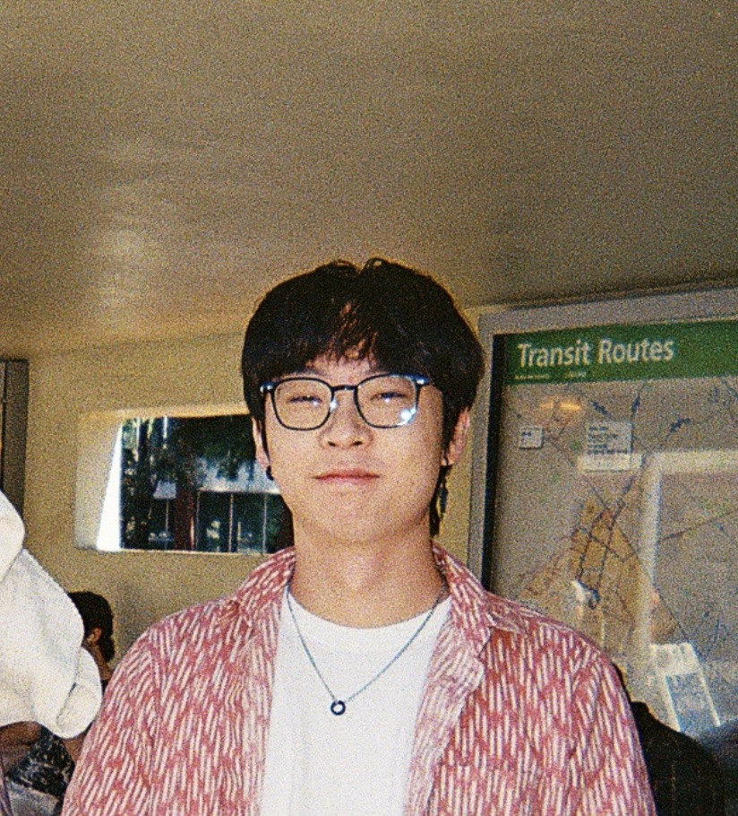

Ivan Ge
I'm currently an intern at OpenAI. I'm on leave from my master's
program at Stanford, where I also graduated with degrees in physics
and math. I do research on AI for science. Feel free to reach
out if you're interested in my work :0
Previously, I've worked at Chicago Trading Company, Nextracker,
Brookhaven National Laboratory, and Fermilab.
Email
/
LinkedIn
/
Google Scholar
/
GitHub
|

|
Publications
|
|
MC²: Monte Carlo Correction for Fast Elliptic PDE Solving
Ethan Hsu, Ivan Ge, Hong Meng Yam
arXiv preprint, 2026.
paper
|
|
|
Classical Hardware Acceleration of Quantum Autoencoders
for Real-Time Anomaly Detection in Collider Experiments
Ivan Ge, Sagar Addepalli, Abhilasha Dave, Julia Gonski
arXiv preprint, 2026.
paper
|
|
|
Shifted Dynamics of Glucose Metabolism in the Hippocampus During Aging
Ivan Ge, Gregory Wohl Kirschen, Xinxing Wang
Frontiers in Aging Neuroscience, 2021.
paper
|
|